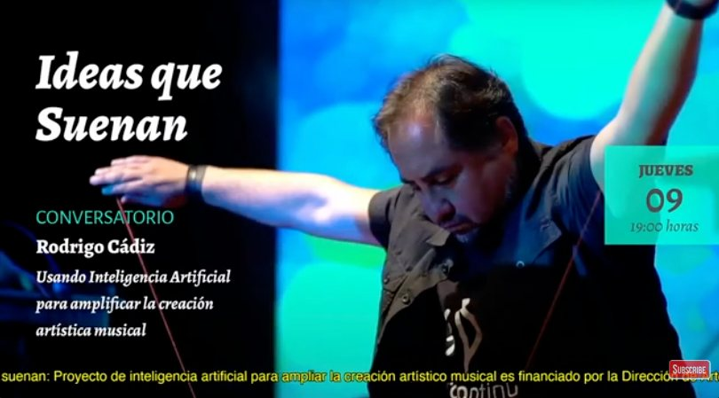
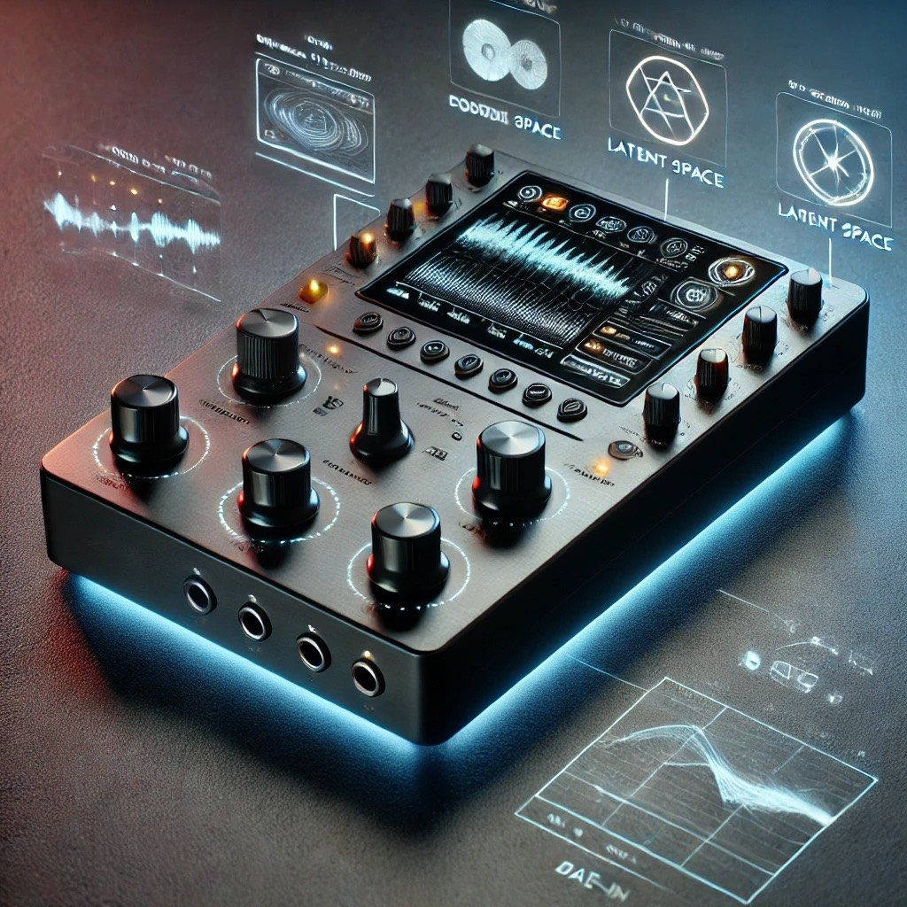
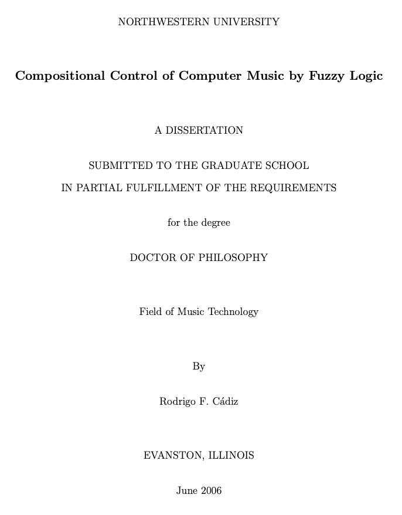
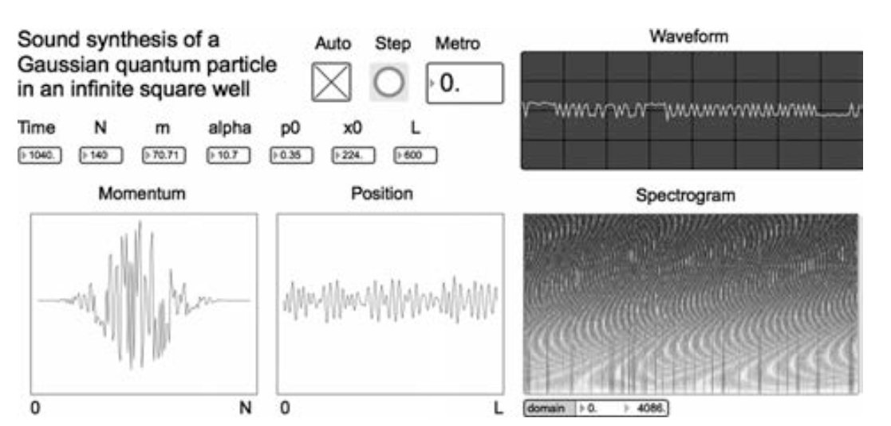
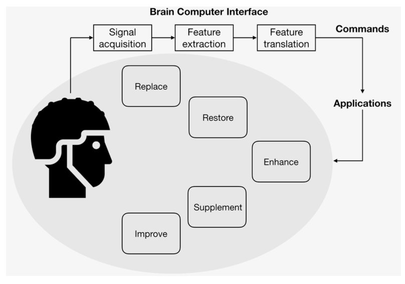

Rodrigo F. Cádiz
InnovatorInnovador
Instruments, algorithms and devicesInstrumentos, algoritmos y dispositivos
Rodrigo F. Cádiz
Instruments, algorithms and devicesInstrumentos, algoritmos y dispositivos
Instruments, algorithms and devices developed at the Pontificia Universidad Católica de Chile and at Northwestern University, presented at ICMC, NIME, ICAD and the IRCAM Forum, and published in Computer Music Journal and IEEE Transactions on Audio, Speech and Language Processing.
Instrumentos, algoritmos y dispositivos desarrollados en la Pontificia Universidad Católica de Chile y en Northwestern University, presentados en ICMC, NIME, ICAD y el Forum IRCAM, y publicados en Computer Music Journal e IEEE Transactions on Audio, Speech and Language Processing.

2008
An electronic musical instrument designed and built entirely in Chile, co created since 2008 with two other academics and a group of UC students. Finalist for the Avonni national innovation prize in 2017 and presented that same year at the Cambridge Innovation Center in Boston. Several works have been written for it, in different configurations.Un instrumento musical electrónico diseñado y construido íntegramente en Chile, co creado desde 2008 junto a otros dos académicos y un grupo de alumnos de la UC. Finalista del premio nacional de innovación Avonni en 2017 y presentado ese mismo año en el Cambridge Innovation Center de Boston. Se han escrito varias obras para él, en distintas configuraciones.

2024
Sole winner, with a colleague from the Institute of Music, of the new Creative Industries competition of the UC Direction of Arts and Culture. The prototype combines VAE, GAN and DDSP models with digital signal processing to allow real time timbral transformation and exploration through interpolation in latent space. Unlike devices aimed at emulating existing gear, it opens an expansive creative range for musicians, producers and sound designers. Now close to its first working prototype.Único adjudicatario, junto a un colega del Instituto de Música, del nuevo Concurso de Industrias Creativas de la Dirección de Artes y Cultura UC. El prototipo combina modelos VAE, GAN y DDSP con procesamiento digital de señales para permitir la transformación tímbrica en tiempo real y su exploración mediante interpolación en el espacio latente. A diferencia de los dispositivos orientados a emular equipos existentes, abre un espectro creativo expansivo para músicos, productores y diseñadores sonoros. Hoy está próximo a su primer prototipo funcional.

2024, 2025
A contemporary ring modulation device built from a historical perspective: low cost, portable and reproducible, combining analog processing with high precision digital control. Presented at ICMC 2024 in South Korea and at the IRCAM Forum in Paris in 2025. It opens a path for recreating and preserving historical repertoire, and it made possible the composition Chiral, for two pianos and ring modulators.Un dispositivo contemporáneo de modulación en anillo construido desde una perspectiva histórica: de bajo costo, portable y reproducible, combinando procesamiento analógico con control digital de alta precisión. Presentado en ICMC 2024 en Corea del Sur y en el Forum IRCAM de París en 2025. Abre un camino para recrear y preservar repertorio histórico, y permitió componer Chiral, para dos pianos y moduladores en anillo.
Methods, systems and devicesMétodos, sistemas y dispositivos
His 2006 Northwestern dissertation introduced fuzzy logic models for composition, processing and sound control, a pioneering framework for joining artificial intelligence and musical creation, translating imprecise descriptors like ‘bright’, ‘dense’ or ‘soft’ into controllable quantities. It laid the ground for intelligent equalisation, interactive computer music control and generative systems.Su tesis doctoral de 2006 en Northwestern introdujo modelos de lógica difusa para la composición, el procesamiento y el control sonoro, un marco pionero para unir inteligencia artificial y creación musical, traduciendo descriptores imprecisos como «brillante», «denso» o «suave» en magnitudes controlables. Sentó las bases para la ecualización inteligente, el control interactivo de música por computador y los sistemas generativos.

With a physics student, a synthesis system based on sonifying the dynamic behaviour of a quantum particle in an infinite square well: the probability and momentum distributions of a Gaussian wave packet become oscillators, in real time, in Max/MSP and Pure Data. Published in Computer Music Journal.Junto a un alumno de física, un sistema de síntesis basado en sonificar el comportamiento dinámico de una partícula cuántica en un pozo cuadrado infinito: las distribuciones de probabilidad y momento de un paquete de ondas gaussiano se convierten en osciladores, en tiempo real, en Max/MSP y Pure Data. Publicado en Computer Music Journal.

Since 2014, a line of work on combination tones: sonic entities that do not exist physically in the emitted signal but emerge in the listener's experience through the nonlinearities of the ear. Composition strategies at the border between what is produced and what is perceived. Best Paper Award, ICMC Shenzhen 2023.Desde 2014, una línea sobre tonos de combinación: entidades sonoras que no existen físicamente en la señal emitida pero emergen en la experiencia del oyente por las no linealidades del oído. Estrategias de composición en la frontera entre lo que se produce y lo que se percibe. Best Paper Award, ICMC Shenzhen 2023.
A BCI system for musical creation using the wireless Enobio EEG device and custom software, translating brain waves and minimal movement into musical parameters in real time. It makes musical expression possible through simple cognitive activity, opening a path even for people with severe motor limitations, such as locked in syndrome.Un sistema de interfaz cerebro computador para la creación musical con el dispositivo EEG inalámbrico Enobio y software propio, que traduce en tiempo real las ondas cerebrales y los movimientos mínimos en parámetros musicales. Hace posible la expresión musical mediante actividad cognitiva simple, abriendo un camino incluso para personas con limitaciones motoras severas, como el síndrome de enclaustramiento.

An extension of Xenakis's dynamic stochastic synthesis that introduces diffusion processes into the model, controlling both the microtemporal morphology of the waveform and the spectral evolution of an additive oscillator bank. It turns a stochastic mathematical model into a practical tool for sound design and composition.Una extensión de la síntesis estocástica dinámica de Xenakis que introduce procesos de difusión en el modelo, controlando tanto la morfología microtemporal de la onda como la evolución espectral de un banco de osciladores aditivos. Convierte un modelo matemático estocástico en una herramienta práctica de diseño sonoro y composición.
Algorithms that use noise as creative material rather than as something to eliminate, based on a nonlinear phenomenon in which added noise improves the perception of weak signals. Implemented in Max/MSP and Matlab; results resemble granular synthesis but rest on a physical model.Algoritmos que usan el ruido como material creativo en vez de como algo a eliminar, basados en un fenómeno no lineal en que el ruido añadido mejora la percepción de señales débiles. Implementados en Max/MSP y Matlab; los resultados se asemejan a la síntesis granular pero se fundan en un modelo físico.
A spatialisation method that improves the perception of spatial audio in large rooms using distributed loudspeakers, driven by models of auditory perception rather than physical metrics. Presented at AVAR 2022 and published in IEEE Transactions on Audio, Speech and Language Processing.Un método de espacialización que mejora la percepción de audio espacial en salas amplias mediante parlantes distribuidos, guiado por modelos de percepción auditiva en vez de métricas físicas. Presentado en AVAR 2022 y publicado en IEEE Transactions on Audio, Speech and Language Processing.
The first use of the Fractional Fourier Transform as a sound synthesis method: rotation in the time frequency plane used directly to generate timbres and dynamic textures unobtainable by conventional means. The α synthesis and α filtering methods. ICMC 2025, Boston.El primer uso de la Transformada de Fourier Fraccional como método de síntesis sonora: la rotación en el plano tiempo frecuencia empleada directamente para generar timbres y texturas dinámicas imposibles por medios convencionales. Los métodos de α síntesis y α filtrado. ICMC 2025, Boston.
Beyond the Arcontinuo: AirTouch, an ultrasound sensor instrument used in iCons that works as a contemporary theremin; the Nintendo Wiimote in eChant, eRecorder and Tensiones; iPad and motion sensors in Extensiones; the Gametrak in Sibila, String Spells, Orbitae and Stridit; flex sensors in the eHarpsichord.Más allá del Arcontinuo: AirTouch, un instrumento basado en sensores de ultrasonido usado en iCons que funciona como un theremin contemporáneo; el Wiimote de Nintendo en eChant, eRecorder y Tensiones; iPad y sensores de movimiento en Extensiones; el Gametrak en Sibila, String Spells, Orbitae y Stridit; sensores de flexión en el eHarpsichord.
Through the Fondecyt de Exploración project Sound Renaissance in Medicine, sound processing techniques developed for musical creation are applied to medical devices: a portable cardiorespiratory holter, AI assisted modular ultrasound, and voice analysis algorithms as early biomarkers of neurological disease.A través del proyecto Fondecyt de Exploración Sound Renaissance in Medicine, técnicas de procesamiento de sonido desarrolladas para la creación musical se aplican a dispositivos médicos: un holter cardiorrespiratorio portátil, ultrasonido modular asistido por IA y algoritmos de análisis de voz como biomarcadores tempranos de enfermedades neurológicas.
Tools that convey the information in charts and tables to blind and visually impaired people, from web applications integrated into Google Sheets to deep learning models that generate auditory graphs directly from images. This line won a Google Latin American Research Award (LARA).Herramientas que transmiten la información de gráficos y tablas a personas ciegas o con discapacidad visual, desde aplicaciones web integradas en Google Sheets hasta modelos de aprendizaje profundo que generan gráficos auditivos directamente desde imágenes. Esta línea obtuvo un Google Latin American Research Award (LARA).
Instead of the fixed curves conventional equalisers apply by genre, this system uses audio descriptors and fuzzy inference to generate dynamic curves adapted to each piece, a solution for works that mix genres or fit no category at all. ICMC 2015.En vez de las curvas fijas que los ecualizadores convencionales aplican por género, este sistema usa descriptores de audio e inferencia difusa para generar curvas dinámicas adaptadas a cada pieza, una solución para obras que mezclan géneros o que no encajan en ninguna categoría. ICMC 2015.